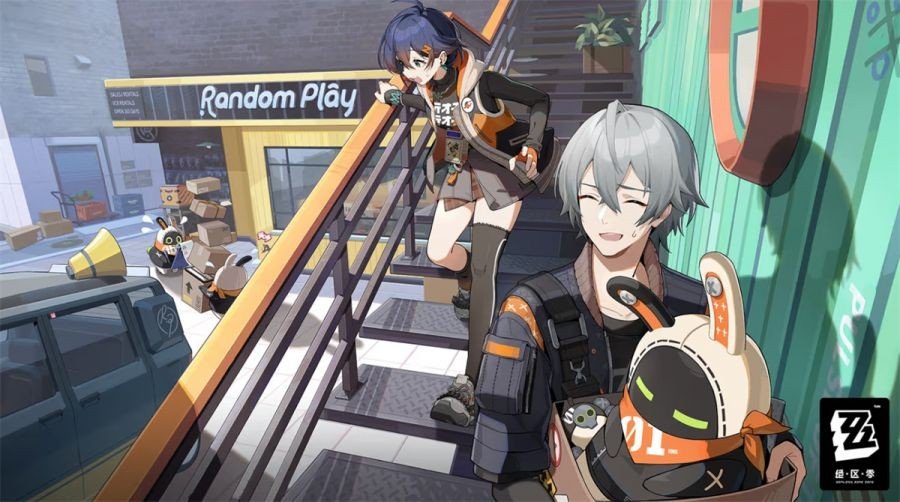
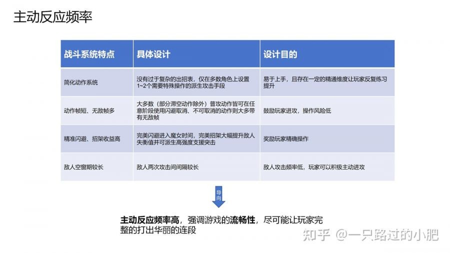
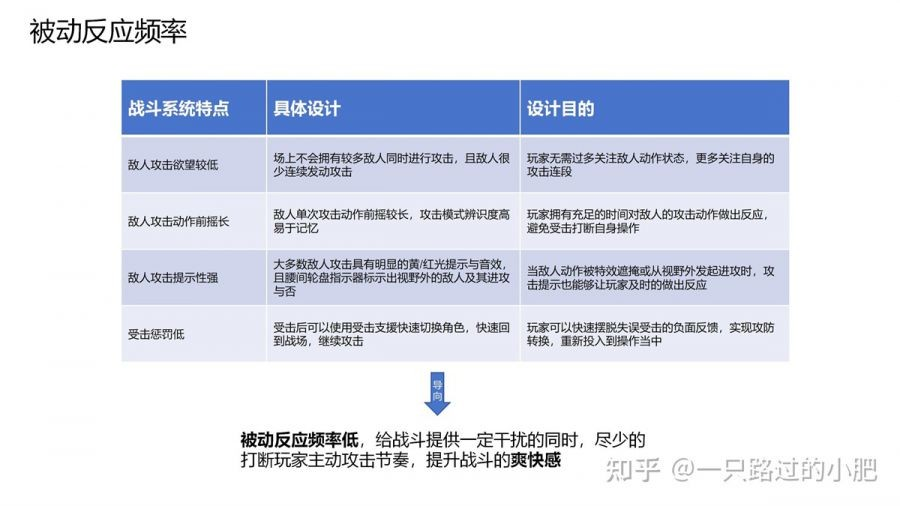
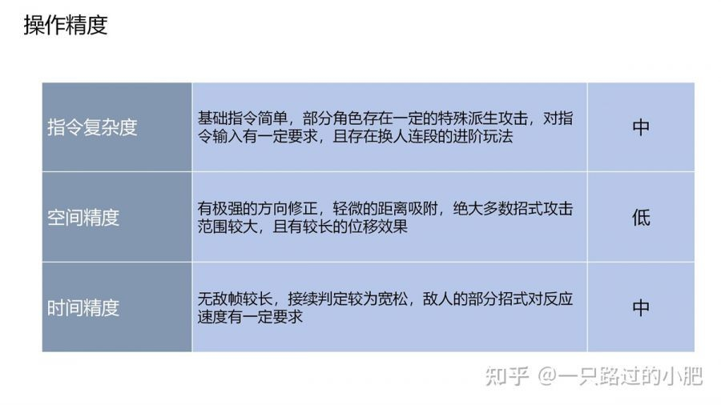
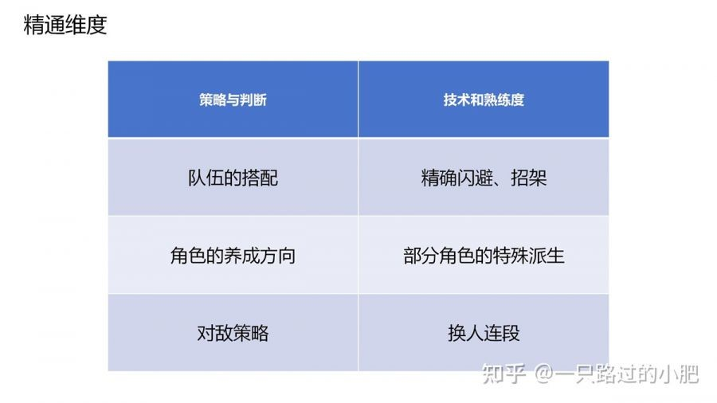
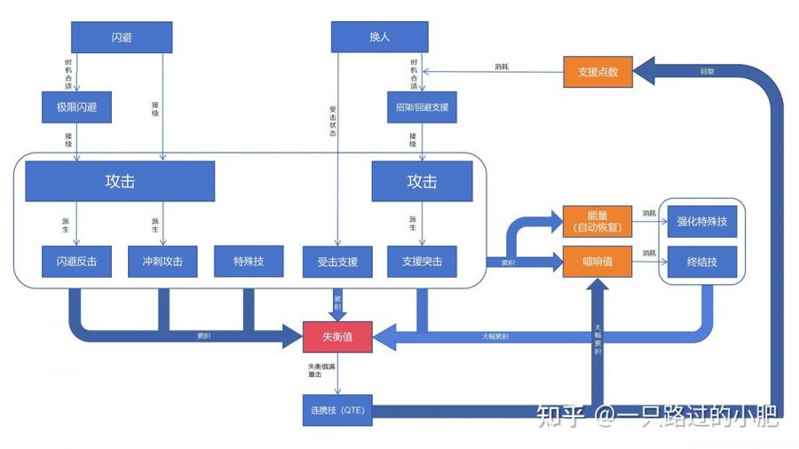

《绝区零》战斗系统浅析与拆解
从《绝区零》二测的「爽」感出发，拆解它的战斗循环：普攻、闪避、特殊技、换人、终结技与失衡值如何串成大小循环；再讨论打击感的五个维度，以及极限支援、支援点数和敌人调度三处仍可优化的地方。
存档说明：原文发表于 GameRes 游资网（2023-12-19），作者「一只路过的小肥」，原链已失效。以下为结构整理，版权归作者所有。

写在前面
《绝区零》在二测「降噪测试」期间开放体验。从社区反馈看，玩家对战斗系统有一个高度一致的感受——「爽」。这篇文章想回答的是：这种爽感由哪些设计堆出来，又在哪些地方还有隐患。
一、战斗系统定位
判断一套动作系统，可以先看三个维度：主被动反应频率、操作精度、精通维度。
1.1 主被动反应频率
玩家主动出招、推进战斗目标，是主动反应；防御、闪避等响应环境的行为，是被动反应。游戏不断向玩家抛出状态、要求应对，两次要求之间的间隔就是反应频率。
《绝区零》属于动作游戏里常见的高主动、低被动频率：强调动作流畅，刻意降低敌人攻击对操作的干扰，攻防转换效率高，重视爽快感，整体是易上手、难精通的路子。


1.2 操作精度
操作精度由指令复杂度、空间精度、时间精度组成。高主动、低被动的游戏，通常会提高指令复杂度，同时用方向修正、距离吸附降低空间精度压力，让玩家专注连招。
《绝区零》也采用低空间精度，但没有在指令复杂度上大做文章，只保留「换人连段」作为进阶上限；它把要求放在时间精度上——玩家要快速识别敌人招式，而丰富的派生动作会正向反馈精确输入，制造「打出华丽连段」的观感。

1.3 精通维度
游戏通常有两类精通：策略与判断（靠观察理解）、技术与熟练度（靠反复练习）。《绝区零》两条都占，但作为抽卡手游，资源有限、玩家会追求最优解，策略完备度的精通循环对多数人偏弱；真正的主循环是操作精度——精准闪避、招架反击、角色特殊派生、换人连段，一层层抬高上限。

二、战斗系统框图及拆解
2.1 系统框图
以玩家行为、战中资源、敌人状态为维度，可以把战斗拆成一套大小循环：
- 小循环：普攻及其派生积攒能量，消耗能量释放强化特殊技。
- 大循环：支援突击、强化特殊技快速积攒敌人失衡值，打出失衡后释放连携技，回复支援点数并大幅积攒喧响值，最终释放终结技。
能量、支援点数、喧响值三种战中资源都靠循环积攒、再消耗释放强力技能，形成一个闭环。

2.2 核心机制
普攻：多数连段可用闪避取消后摇；能较高效积攒场上角色的能量；连段后半段伤害更高，尾刀带重击效果；部分角色精准输入可改变攻击属性。设计意图是鼓励频繁普攻、区分前后场角色，并鼓励打完整套。
闪避：没有次数冷却，但短时间连续闪两次会进入 1 秒冷却；闪避后可派生冲刺攻击；精准闪避进入「魔女时间」，带无敌帧；精准闪避后还可派生闪避反击，带重击与无敌帧。它既是低成本的熟悉招式手段，也是精确操作的奖励出口。
特殊技：无冷却、可闪避取消、带重击，但伤害与失衡效率低；能量足够时变为强化特殊技，动作更重、伤害与失衡更高、带无敌帧，后摇不能闪避取消，但可以用换人「取消」。能量会自动回复，部分角色的强化特殊技还会留下持续一段时间或攻击次数的增益（附魔），以此提升后台角色价值、鼓励切换。
换人：无冷却；场上队友执行完当前动作后退场，新角色从屏幕后方冲刺入场，保证节奏不断。换下场的角色若正在放没有无敌帧的动作，仍会受伤，这鼓励玩家在无敌帧或长后摇动作中换人。当前角色被击飞时，换人会临时变成「受击支援」，可立刻入场反击。敌人黄光攻击时换人触发「极限支援」，下一名队友瞬移到敌人身前招架（近战）或回避（远程），大幅提升失衡值或进入魔女时间；招架支援还能在一段时间内自动连续招架。极限支援消耗不能自动回复的支援点数，点数耗尽后黄光会变红光；红光换人则自动精准闪避并可派生闪避反击。招架或回避支援后还能派生支援突击：高伤、高失衡、重击、无敌帧，但前后摇长，任何阶段都不能闪避取消或换人。支援突击同样提供附魔，是一条建立在换人上的被动增益路径。
终结技：喧响值满后释放，全队共享，释放后清空；威力与失衡极高、带重击与无敌帧、不可取消，并有独立特写。它是一段循环的高潮，也是对长时间进攻压力的释放。主被动行为都能攒喧响，其中招架/回避支援、支援突击、连携技、属性异常攒得更快，使终结技与失衡大循环强绑定。
失衡值：主动攻击积累失衡值，满值后敌人进入长时间硬直，受到伤害提高 50%。重击失衡敌人会触发 QTE 式连携技，切换队友释放；连携技带重击与无敌帧，并回复 1 点支援点数。满编队伍对普通、精英、首领级敌人可分别释放 1、2、3 次连携技。连携技也提供附魔，等于一段循环收尾时免费发放的奖励，让玩家快速进入下一轮。
其他细节：持续属性伤害会触发属性异常，是队伍构建的核心；角色受到致死伤害会保留 1 点生命，再受击才退场，提高容错；喧响量表用彩色积分 UI，并显示当前加值动作；敌人在单次招式内受到致死伤害时，会等招式结束才死亡，减少「打空气」的挫败感，也提高重击失衡的易用性。
2.3 打击感设计
文章从动作、特效、镜头、音效、顿帧五个方面看《绝区零》的做法。
动作：轻型武器用少量过程帧加打击关键帧，快启动慢恢复，突出速度；重型武器轨迹更平滑，突出力量；远程武器最后一击用夸张后退位移表现后坐力；敌人受击动画匹配攻击轨迹，前几帧就有明显受击趋势；连续受击会取消上一段受击动画，直接播新的，强化命中确认；招架大型敌人时，角色后退幅度按体型区分，用对比表现攻击强度；部分刀剑角色奔跑时可格挡子弹。
特效：整体明亮迅猛，不过度覆盖动作；受击特效在受击点沿轨迹爆发，斩击用长线条拉伸，打击型偏方形，远程迸发彩色火星；敌人攻击时爆发明亮细长的预警特效。
镜头：蓄力或后坐时镜头拉伸；触发连携技与招架反击时快速大幅拉近再缓慢回归，放大 QTE 的紧张感；命中敌人、场景或空气震动时，按攻击轨迹方向震屏；瞬移快切、防止失控，高速位移则让镜头略带滞后，突出速度；武器碰撞地面或墙体产生划痕、裂地。
音效：打击音量与动作力量匹配；命中、闪避成功、招架支援、怪物攻击的提示音清晰、时机准确、特征鲜明。
后处理与其他：魔女时间画面整体变灰并短暂屏蔽 BGM；受击时叠加老电视条纹模糊；伤害飘字按属性变色，暴击在尾部加两个感叹号并放大；进关卡 180 度环绕展示角色，结算用多机位慢动作衔接战斗与关卡；大力招式叠加模糊；敌人动作最快的几帧加动态模糊，帮助玩家捕捉打击帧。
顿帧：多数高速动作游戏对顿帧很克制，《绝区零》反其道而行，广泛使用，连远程命中也有顿帧，并按武器类型和攻击强度区分时长。制作组显然知道这会产生卡顿感、牺牲一点真实感，但确实做出了辨识度。作者也吐槽：连续命中多名敌人时顿帧过重，「说是在播 PPT 也不为过」，建议用插值等手段优化。
三、问题与优化
二测相比首测有明显提升。极限支援的加入，解决了大循环周期过长、过度依赖玩家主动换人的问题：它既是新对策，又嵌入资源循环，还提供了强制性的被动换人手段。
但拆解的目的不是夸，而是找问题。
3.1 支援系统
极限支援的触发反直觉。 精准闪避是在攻击即将命中时闪；极限支援却是在敌人预警亮起、到打击动作发生之间换人。游戏初期，这很难靠直觉做对，遇到可读性差或预警不在关键帧的招式、以及远程红光攻击时，玩家常常「换人挨打」。玩久了会适应，但适应之后又出现第二个问题：后期几乎变成纯拼反应，而不是读招后做精准对策，攻防闪的交互乐趣被削弱，快慢刀、节奏刀的空间也被压缩。
原因在于极限支援只能处理黄光、红光，不能处理无预警攻击；若无预警时换人也能支援，玩家就会分不清何时该闪、何时该换。作者给出三条优化思路：
- 从敌人侧控制可支援招式的频率与出手时机，更多用动作本身表达攻击，只在连段后续或最后一击给预警。优点是提升 Boss 交互、逼玩家同时掌握两套对策；缺点是杂兵战本质没变，前期反直觉依旧。
- 把触发改成与闪避一致——即将命中时换人，且支援可应对所有攻击，敌人只用红光预警。优点是直觉统一、不动摇攻防闪的基本乐趣；缺点是资源不足时同一招式效果不同，反馈不直观。
- 在第二条基础上，用类似《漫威蜘蛛侠》蜘蛛感应的方式提示「这一击能否被支援」。优点是直觉统一、又不会彻底取代闪避；缺点是杂兵战高频提示容易疲劳，对敌人调度和 FOV 要求更高。
作者更偏好第二、第三种，并认为第一种可以作为节奏变化融合进去。
支援点数的负消耗。 支援点数只能靠重击失衡后的连携技补充，而极限支援恰恰是攒失衡最有效的手段之一。循环看似成立，但战斗的最终目的是击杀：如果消耗点数后在敌人失衡前把它打死，这一点数就补不回来。战力碾压的关卡、低血量敌人试图攻击时尤其明显——玩家「可为却不敢为」，与高奖低惩的理念相悖。点数耗尽后更难打出失衡，整个以失衡为核心的循环都会恶化。
作者认为，支援点数只应限制极限支援在单次循环中的使用次数，不应动摇失衡循环本身。三条优化：
- 击杀按敌人等级回复 1/2/3 点，类似《Hades》投弹技击杀回收。优点是对现有循环影响最小；缺点是叠加连携技回复后会溢出，资源管理变得无脑。
- 缓慢自动恢复，并用玩家行为加速，精准闪避最有效。优点是契合高奖低惩、鼓励进攻，也符合大小循环；缺点是 Boss 战中循环会被加速。
- 参考《FF7 Remake》的 ATB，彻底与失衡、连携脱钩，靠主动攻击、闪避积攒。优点是资源管理与策略深度更高；缺点是玩家掌握不了进攻节奏时，会陷入资源不足的负反馈。
作者最推崇第二种。
3.2 敌人调度
动作游戏里，战场信息掌控非常关键。常见清版动作游戏会用出手机制控制压力：2+1（《猎天使魔女》）、2+?（《鬼泣》，且不受屏幕外敌人攻击）、1+1（《中土世界》）、Token（《战神》）。
《绝区零》采用 2+1，但方向修正与镜头跟随很强、FOV 不算高，攻击又常带长位移和击退，连续进攻容易把敌人推到版边，玩家很难看到全局；游戏也缺少空连之类主动创造安全输出环境的手段。屏幕外预警只有腰间轮盘指示器和提示音，轮盘颜色在丰富特效里不够醒目；手机操作与手柄转向又难以立刻面向敌人。结果就是被视野外敌人偷袭，只能慌乱闪避，这是整套战斗里最负面的体验之一。
作者建议更彻底地贯彻「不受屏幕外敌人攻击」，参考《鬼泣》的 2+?；但《绝区零》推版严重，屏幕里常常只剩一个敌人，完全「掩耳盗铃」又会让难度过低。另一个方向是《战神》GDC 分享的攻击辅助：把敌人受击的初始运动轨迹与当前镜头朝向混合，让被打的敌人尽量留在屏幕内。这个思路也可以用在连携技的旋转偏移上——朝敌人最多的象限偏。
3.3 其他问题
大型敌人面前 FOV 糟糕；步/机枪子弹几乎无对策还能打出硬直；部分 Boss 疯狂闪现；连携技会锁空气、锁机关；命中机械与肉体没有区分音效。这些多是细节，不是系统方向问题。
总结
尽管有瑕疵，《绝区零》的战斗系统仍然优秀。高频主被动切换、换人连段，把「换人」从离散操作变成连续行为，比依靠元素反应联动多角色的 RPG 式设计更符合高速动作游戏的气质，也更流畅。
更让作者意外的是二测舍弃了一测割裂的主线肉鸽关卡，改用费力的独立关卡承担叙事；从世界观、UI、角色、关卡、战斗到抽卡表现高度统一，充满设计者的主观表达，甚至很难在主菜单找到常用日常功能。它既让人庆幸这是一款 F2P 游戏，能让更多人体验优秀设计；也让人遗憾 F2P 的长线运营终究会带来密集体验后的虚无。
作者致谢奶牛关「五十万」与 B 站 UP 主「听故事的伊君」，并列出参考：〈当我们谈论动作游戏，我们在谈论什么〉、《艾尔登法环》战斗系统拆解、GDC《从新角度看〈战神〉的进化战斗系统》。
原文信息
- 标题：〈《绝区零》战斗系统浅析与拆解〉
- 作者：一只路过的小肥
- 原载：GameRes 游资网，2023-12-19
- 原链：https://www.gameres.com/891760.html（已失效）
- 作者注明的首发：https://zhuanlan.zhihu.com/p/671440178